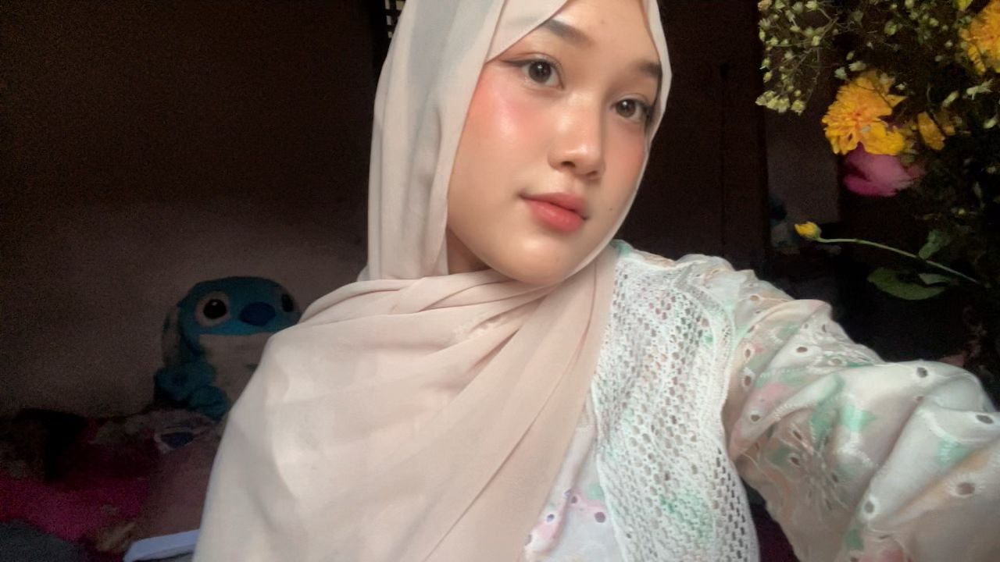

Semuanya dimulai
Dari judul, pertanyaan, dan banyak hal yang belum jelas—kamu tetap memilih untuk memulai.
A little keepsake for Amel
THE DAY YOU DID IT
Dulu, hari ini terasa begitu jauh.
Sekarang, kamu sudah sampai.
Dibuat dengan bangga, dari Ansa.

Akmelia Zahra · S.Pd.01 — Before the answer
Sebelum toga, ada seorang Amel yang bertanya-tanya apakah ia sanggup melewati semuanya.
Dari judul, pertanyaan, dan banyak hal yang belum jelas—kamu tetap memilih untuk memulai.
Ada teori, data, revisi, lelah, dan hari-hari ketika pikiran terasa terlalu ramai.
Bahkan saat takut lebih besar dari rasa percaya diri, kamu kembali mencoba.
Kamu membawa semua yang sudah dipelajari, lalu membuktikan bahwa kamu mampu.
Rasa takut tidak pernah menceritakan seluruh kemampuanmu.
02 — The moment is yours
Hari ini bukan lagi tentang kecemasan sebelum sidang. Hari ini tentang toga, senyum lega, dan bukti nyata dari semua perjuanganmu.
Akmelia Zahra · Sarjana Pendidikan
03 — A note from Ansa
Untuk Amel, yang terus melangkah bahkan saat jalannya terasa berat.
Amel,
Dulu, sebelum sidang, aku bilang kamu lebih siap dari yang kamu kira. Hari ini aku ingin bilang: lihat, kamu berhasil melewatinya.
Aku tahu gelar ini tidak datang begitu saja. Ada revisi yang melelahkan, rasa cemas yang kadang datang lagi, dan banyak usaha yang mungkin tidak dilihat orang lain. Tapi kamu tetap bertahan dan menyelesaikan semuanya dengan caramu sendiri.
Aku bangga bukan hanya karena hari ini kamu resmi lulus. Aku bangga pada dirimu yang terus mencoba, belajar, dan kembali berdiri setiap kali merasa ragu.
Semoga pencapaian ini menjadi awal dari banyak hal baik. Untuk malam ini, tarik napas lega dulu. Kamu pantas menikmati hari yang sudah kamu perjuangkan.
You did it, Amel. You totally deserve this moment.
Dengan bangga,
Ansa
04 — The next page
✳Semoga ilmu yang Amel dapatkan membawa berkah. Semoga langkah setelah ini dipenuhi kemudahan, orang-orang baik, dan kesempatan untuk terus tumbuh.
Bismillahirrahmanirrahim.
Semoga Allah selalu menjaga dan memberkahi setiap langkahmu.
Doa dan bangga selalu menyertaimu.
Selamat atas kelulusanmu, Amel.
One chapter closes, another begins.
For tonight, just be proud of yourself.